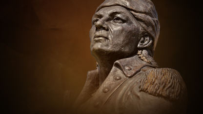
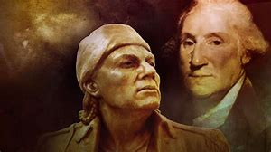

"Could I once see the day that whites and reds were all friends, it would be like getting new eyesight."
  Born in 1750 in Chokkilissa'-Old Town, Mississipi, Tushatohoa (Mountain Leader) earned his name from the Cherokee. Through his eploits throughout his life he became the Hopayi Minko (Minko or minku means "king".) or "War Prophet King", both a spiritual and war leader. Piominko established a personal relationship on behalf of the Chickasaws with President George Washington, visiting him officially in Philadelphia and also at Mt. Vernon in Virginia. Piominko secured American support for the Chickasaws at a time when the Chickasaw population was very low and the tribe was under attack from much larger confederacies. He died of natural causes near modern day Tupelo Mississippi in 1799.
Places lived:
Click the following links for more information: